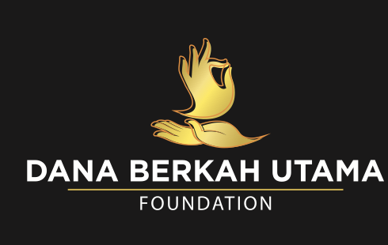

Empati di media sosial
Cerita-cerita pasien yang dibagikan lewat Instagram membangun jaringan orang baik yang siap membantu secara cepat dan personal.

Yayasan Dana Berkah Utama lahir dari keinginan sederhana untuk tidak membiarkan keluarga yang sedang berjuang merasa sendirian. Dari media sosial, relasi pribadi, dan aksi cepat di lapangan, langkah itu tumbuh menjadi pondasi gerakan yang membantu pasien bayi, anak-anak, dan keluarga yang membutuhkan dukungan kemanusiaan.
Pada awalnya, kegiatan sosial dan kemanusiaan dilakukan secara organik melalui komunitas yang terbentuk di sekitar akun media sosial @pempek_funny. Setiap cerita pasien yang datang bukan sekadar informasi, tetapi menjadi panggilan hati untuk bergerak lebih cepat.

Bantuan demi bantuan mulai mengalir untuk pasien bayi dan anak-anak yang membutuhkan pertolongan, baik di dalam negeri maupun untuk kebutuhan rujukan ke luar negeri. Dari titik itu, tim melihat bahwa kepedulian tidak bisa berhenti sebagai aksi spontan semata. Ia membutuhkan sistem, kesinambungan, dan rumah yang lebih kuat.
Karena itu, Yayasan Dana Berkah Utama dibangun untuk menjadi wadah yang mampu menghubungkan donatur, relawan, dan masyarakat dalam satu gerakan yang tertata. Tujuannya sederhana namun kuat: memastikan keluarga yang sedang menghadapi masa sulit tetap punya akses pada perhatian, jaringan bantuan, dan peluang untuk memperoleh pengobatan terbaik.
Hingga hari ini, cerita kami tetap berakar pada empati yang sama. Setiap program, kolaborasi, dan penggalangan dana dijalankan dengan semangat bahwa kesehatan anak adalah anugerah tertinggi yang perlu dijaga bersama.
Cerita-cerita pasien yang dibagikan lewat Instagram membangun jaringan orang baik yang siap membantu secara cepat dan personal.
Dukungan untuk pasien bayi dan anak berkembang menjadi pendampingan yang lebih rapi, termasuk kebutuhan rujukan dan pengobatan lanjutan.
Dana Berkah Utama hadir sebagai fondasi resmi agar gerakan sosial ini dapat berjalan konsisten, akuntabel, dan terus bertumbuh.
Donatur, relawan, dan mitra terus dipertemukan dalam misi yang sama: membuka akses hidup yang lebih sehat dan lebih baik bagi anak-anak.
Yayasan Dana Berkah Utama hadir untuk mengupayakan agar lebih banyak anak dan keluarga memperoleh kesempatan hidup yang sehat, bermartabat, dan penuh harapan.
Jika Anda ingin ikut menghadirkan harapan bagi anak-anak dan keluarga yang membutuhkan, kami membuka pintu untuk kolaborasi, dukungan, dan langkah baik berikutnya.